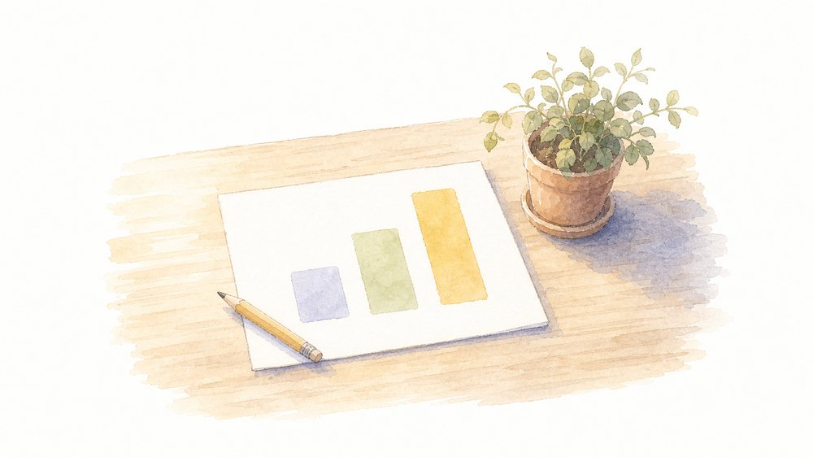

碩田学園 生成AI研修
じてん
← 研修トップへ
研修トップ
／
使い方
／ Google スプレッドシート
Sheets ・ vs Excel
Google スプレッドシート
Excel と同じ「表計算」。式や関数もほぼ同じ。強みは、みんなで同時に入力でき、変更がその場で全員に反映されること。
この道具のきほん
入力すると、集計もグラフも自動

数を入れれば、集計もグラフも自動。空いた手を、子どもへ。
Microsoft との違い
Excel を使ってきた先生へ
観点
Google Sheets
Excel
関数
SUM・AVERAGE等 Excelとほぼ同じ
同じ
共同編集
同時に入力できる
基本は1人ずつ
集計
変更が全員にすぐ反映
送り直しが必要
特色
QUERY等のクラウド関数
マクロが強力
ひとことで：
式や関数は Excel とほぼ同じ。複雑なマクロは Excel が上、みんなで同時に触るならスプレッドシート。
授業・校務での使い方
こんなときに使えます
子どもが撮った写真・気づきを1枚に集めて見える化
学級の当番表・記録の共同管理
アンケートの簡単な集計
つまずき対策：セルの結合を減らすと、共同編集で表が崩れにくくなります。
← Google ドキュメント
Google スライド →